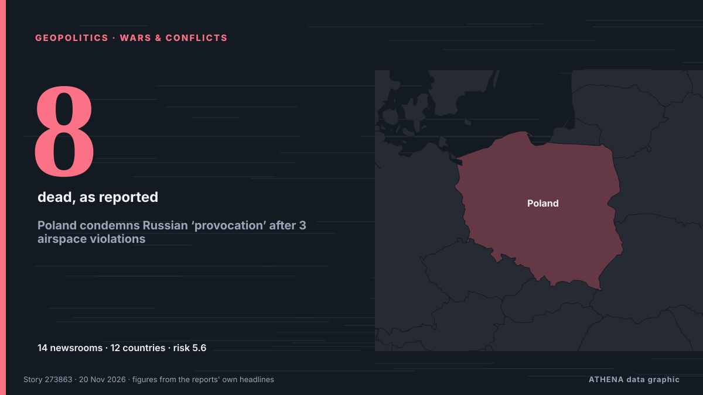

Γεωπολιτική, Πολιτική & Ασφάλεια
ΧορηγούμενοΠαρουσιάζεται από  Cybernetics and Artificial Intelligence Lab Welcome to the Cybernetics and Artificial Intelligence Laboratory, established at the Department of Business Administration of the National and Kapodistrian University of Athens. The lab is headed by Professor Dimitrios Thomakos. The lab aims to do research that can be published in top venues. Our research uses tools and methods of Artificial Intelligence, and lies in the following areas: - Forecasting - Decision making - Cyber security - Finance We are always looking forward to collaborating with exceptional students!
Cybernetics and Artificial Intelligence Lab Welcome to the Cybernetics and Artificial Intelligence Laboratory, established at the Department of Business Administration of the National and Kapodistrian University of Athens. The lab is headed by Professor Dimitrios Thomakos. The lab aims to do research that can be published in top venues. Our research uses tools and methods of Artificial Intelligence, and lies in the following areas: - Forecasting - Decision making - Cyber security - Finance We are always looking forward to collaborating with exceptional students!
Οι τίτλοι των ειδήσεων παρουσιάζονται στα αγγλικά, όπως δημοσιεύτηκαν.

Πόλεμοι & συγκρούσειςPoland condemns Russian ‘provocation’ after 3 airspace violations
The incursions happened as Poland was set to hold military exercises for the 'Coalition of the Willing', a group of Ukraine's allies, on Friday. από Free Malaysia Today
| 7 Νοε | 211 |
|---|---|
| 8 Νοε | 200 |
| 9 Νοε | 317 |
| 10 Νοε | 287 |
| 11 Νοε | 261 |
| 12 Νοε | 265 |
| 13 Νοε | 223 |
| 14 Νοε | 179 |
| 15 Νοε | 197 |
| 16 Νοε | 273 |
| 17 Νοε | 257 |
| 18 Νοε | 237 |
| 19 Νοε | 218 |
| 20 Νοε | 41 |
Estonia to close border with Russia after arson attack on local drone maker
Estonia plans to close its road border crossings with Russia in response to an attempted arson attack against Estonian defense company Threod Systems. από Defense News
Kushner: Trump open to NATO-like security guarantees for Ukraine
US President Donald Trump is open to offering NATO-like security guarantees to Ukraine, envoy Jared Kushner has said. από Al Jazeera English
Ukraine: Russian strikes damage Austrian and Dutch embassies in Kyiv
Russian strikes damaged the Austrian and Dutch embassies in Kyiv on Thursday. από Euronews English
Europe warns against Ukraine peace deal made over its head
European allies met in Berlin to support Ukraine and warned against any attempt to decide a peace over their heads, after President Donald Trump embraced Russia’s Vladimir Putin as a “friend” at a… από Cyprus Mail
Trump’s historic summit with Xi, Putin
President Trump held a historic trilateral summit with the leaders of China and Russia. από NBC News (World)
'We will not negotiate' — Putin addresses Ukraine's strikes on Crimean Bridge
The remarks marked the Russian president's first public reaction to the attacks on the bridge, which he described as having sustained "serious damage." από Kyiv Independent
Musk feels ‘pretty foolish’ over spending on Republicans
NEW YORK: Elon Musk said on Wednesday he felt “pretty foolish” about the amount of money he spent on this year’s US midterm elections after Republicans suffered sweeping losses. από Dawn
US, China can help end Ukraine war, Trump tells Xi before trilateral with Putin
By Jarrett Renshaw and Trevor Hunnicutt SHENZHEN, China, Nov 19 (Reuters) - US President Donald Trump told his Chinese counterpart Xi Jinping on Thursday that they should both help end the war in… από Al-Monitor
Trump pushes decision on new Iran strikes into next year: ‘We’ve got time’
Trump had previously suggested Iran would be more willing to make a deal after the US midterms, which Republicans lost. από The Jerusalem Post
Saudi-led coalition says it intercepted Houthi ballistic missiles, destroyed launcher
Coalition reports missile threats targeting Riyadh, southern Saudi Arabia, debris causing material damage in capital. από Express Tribune
Mary Peltola wins in Alaska, securing 56-44 US Senate majority for Democrats
It's nine Senate seats flipped by the Democrats, most since 1958. από Times of India (World)
Hegseth, in Caracas, announces US-Venezuela military partnership agreement
He said the cooperation will ramp up joint action against drug trafficking groups. από The Straits Times
Limiting Nuclear Weapons Will Be Hard, Says Trump After Meetings With Xi, Putin
"I love the concept of it but in terms of pure negotiation, it's a very hard thing for me as a president to do," Trump told Reuters by phone as he flew back to Washington from his trilateral summit… από NDTV World
Russian national accused of spying on employees of Silicon Valley defense and technology company
A Russian man who prosecutors say was recruited by his government has been charged with stalking employees of a Silicon Valley technology and defense company in order to gather intelligence, the… από The Canadian Press (via CityNews)
Israel army says completed central Gaza ground operation
The Israeli military has announced the completion of its ground operation in central Gaza, near Al-Bureij and Nuseirat refugee camps. από Arab News
Brazil's Senate approves Lula's $10 billion fiscal package after costly election spending
Brazil’s Senate approved on Wednesday a plan by President Luiz Inácio Lula da Silva to control his government’s spending and increase revenues after his reelection late October. από ABC News (International)
Prince Harry: I’d rejoin the military to fight Russia
Prince Harry spoke exclusively to The Telegraph's Ukraine: The Latest podcast during an unannounced visit to Lviv. από Business Insider
With US midterms underway, courts rebuff Trump's pressure on state election officials
Nov 3 - In the hours before polls opened for the US midterm elections on Tuesday, federal judges issued a series of rulings restricting the Trump administration's unprecedented efforts to pressure… από The Straits Times
Who is Hakeem Jeffries, the Democrat nominated to become the first Black US House Speaker
Poised to become the next Democratic House speaker, Jeffries has shifted from unconditional support for Israel to calls for change, but remains vague about what that means as progressives press him… από Haaretz (English)
Trilateral meeting between Trump, Xi and Putin held in Shenzhen
Kremlin spokesman says Russian, Chinese and US presidents will meet on sidelines of APEC summit. από Anadolu Agency (English)
Xi meets Trump in China's Shenzhen
On Thursday evening November the 19th in Shenzhen, Trump, Xi and Putin will sit in the same room for the first time. από FXStreet
Israel begins new military operation in Gaza
Israeli tanks advanced in an area of the central Gaza Strip on Wednesday, witnesses said, and the Israeli military said its forces were targeting Hamas infrastructure outside the "Yellow Line" that… από France 24 English
Trump meets Xi after Putin talks as leaders discuss ending Ukraine war
President Trump plans to discuss Ukraine with the leaders of Russia and China. από The New York Times (World)
Parliament amends bill on Iran’s accession to Mecca Pact
Tehran, IRNA – Iranian lawmakers have approved amendments to a bill on the government’s accession to the Mecca Pact. από IRNA (English)
Trump arrives in China for historic meeting with Xi, Putin
President Donald Trump in Shenzhen for historic trilateral talks with Chinese leader Xi Jinping and Russia's Vladimir Putin. από CNBC World
US hits out at Ukraine’s ‘deep strikes’ against Russia
US defence official Elbridge Colby said support for Kyiv should be focused on bolstering the front line. από The Straits Times
Iran fires on US airbase in Kuwait, several times at Bahrain
Iran fired on a US airbase in Kuwait and several times at Bahrain on Wednesday, in what appeared to be retaliation for US strikes the day before, AP reported. από Gulf News
Widespread outages hit banks, air travel, the NSA and Apple, disrupting seemingly everything
Major outages showcase the risks of interconnected tech in the age of AI. από CNBC World
Japan scrambles fighter jets after Russian aircraft breach airspace amid rising Pacific tensions
Suspected Russian aircraft entered Japanese airspace near Okinoshima, and Prime Minister Sanae Takaichi warned of instability at the Quad Leaders Summit. από Fox News (World)
US strikes IRGC missile launch site on Iran's Qeshm Island
The Islamic Revolutionary Guard Corps (IRGC) of Iran announced the downing of a US MQ-1 reconnaissance drone in the area of Qeshm island in southern Iran, Tasnim reports. από NEWS.am (English)
Ukraine’s attack on Kerch Bridge is a major blow to Putin and Russia’s control of Crimea
The Kerch Bridge connecting Crimea and Russia is crucial for Moscow, both logistically and symbolically. από The Independent
Opening ceremony of APEC CEO Summit 2026 held in Shenzhen
The Asia-Pacific Economic Cooperation (APEC) CEO Summit 2026 opened Tuesday in Shenzhen, south China's Guangdong Province, bringing together business and political leaders from across the… από CGTN (China)
Saudi Arabia appoints new Yemen commander amid setbacks
Saudi Arabia has appointed General Fayyad Al-Ruwaili as the new commander of its coalition forces in Yemen, amid Houthi advances. από The New Arab
Highly classified NSA communications network goes down
A highly classified communications network used by the US National Security Agency (NSA) has gone down, CNN reported Tuesday, citing six people familiar with the matter. από Israel Hayom (English)